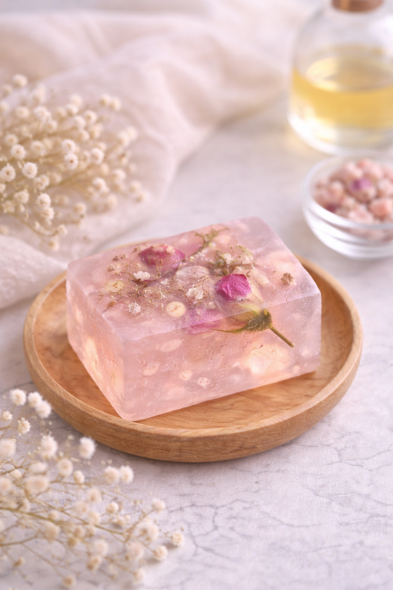
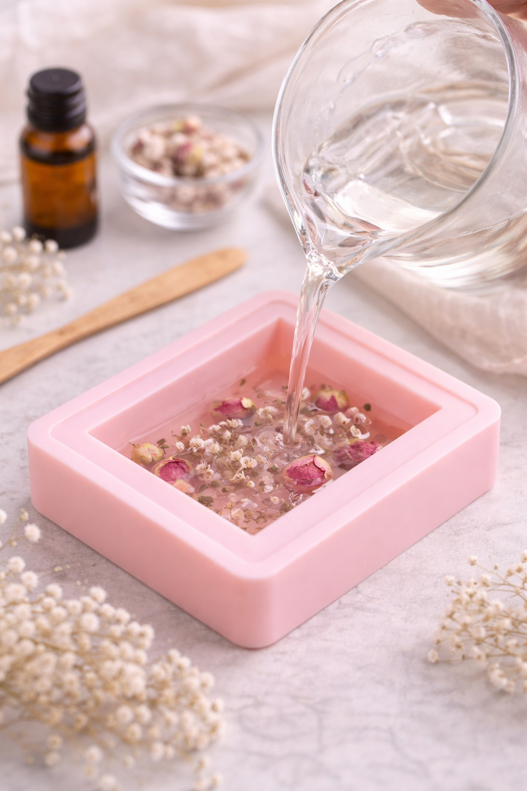
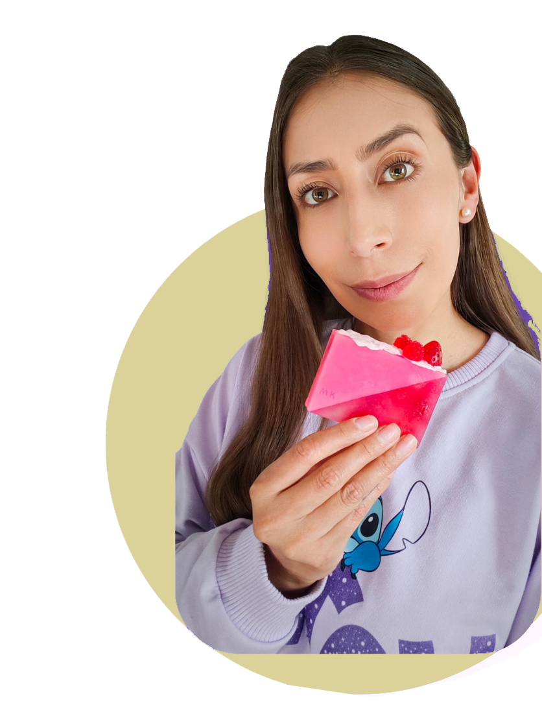

"Nunca hice algo así"
El curso está pensado para principiantes y te acompaña desde la base, sin asumir conocimientos previos.
Curso online paso a paso para principiantes


Una guía clara para dejar de mirar tutoriales sueltos y empezar a crear desde casa jabones hermosos, prolijos y con mejor terminación, ya sea para regalar, disfrutar como hobby o dar tus primeros pasos vendiendo.
Empieza hoy
Accedes al curso online, avanzas a tu ritmo y tienes 7 dias de garantia para revisar si era lo que buscabas.
Si hoy tienes dudas, esto te puede ayudar
El curso está pensado para principiantes y te acompaña desde la base, sin asumir conocimientos previos.
Aprendes qué necesitas de verdad, cómo elegir mejor y cómo evitar compras innecesarias al empezar.
Trabajas proceso, terminación y presentación para lograr jabones más delicados, prolijos y con mejor valor percibido.
Puedes usarlo como actividad creativa personal o tomarlo como base para empezar una pequeña línea artesanal.
Lo que puedes lograr
Entiendes materiales, proceso y orden de trabajo para avanzar con menos dudas desde el principio.
Aprendes a lograr piezas más delicadas, armónicas y prolijas, en lugar de quedarte con acabados improvisados.
Puedes crear para regalar, disfrutar un hobby bonito o comenzar a mostrar y vender tus primeros trabajos.
Antes y después
Antes
Después
Experiencias de alumnas
La experiencia se repite: explicaciones claras, motivación y una forma de aprender más ordenada para principiantes.
"Muy didáctica y encantadora en sus explicaciones, me encanta cómo la profe enseña."
"Feliz de aprender, todo muy claro. Motivación constante y todo muy bien explicado."
"Muy buena experiencia, bien explicada, me ha gustado mucho."
"Me encantó el curso, sin duda fue un gran paso para poder emprender en este mundo de los jabones."
Lo que puedes llegar a crear


Crea piezas que se vean especiales, cuidadas y hechas con intención.
Convierte lo artesanal en un momento tuyo, creativo y realmente bonito.
Mejora presentación, terminación y valor percibido para mostrar un producto más atractivo.
Qué incluye el curso
Entiendes la base correcta para empezar con seguridad, aunque hoy no sepas por dónde arrancar.
Ves materiales y herramientas con claridad para comprar lo necesario desde el principio.
Avanzas con clases grabadas y ordenadas, sin depender de tutoriales sueltos que no conectan entre sí.
Aprendes diseño, terminación y presentación para crear jabones delicados, prolijos y cuidados.
Incorporas ideas y estilos para crear piezas con identidad visual y terminación cuidada.
Ves una guía inicial para pensar presentación, propuesta y primeros pasos de venta.
Antes de entrar, podés ver cómo es la plataforma y qué tipo de clases vas a encontrar.
Así podés ver con claridad qué incluye antes de entrar.

Quién enseña
Su forma de enseñar combina sensibilidad artesanal, explicaciones claras y una metodología pensada para que no te sientas perdida.
Comparte años de experiencia en jabonería de glicerina con un enfoque práctico, cercano y orientado a que realmente puedas aplicar lo aprendido.
Para ver si es para ti
Este curso es para ti si...
Probablemente no sea para ti si...
Compra con tranquilidad
Puedes entrar, revisar el contenido con calma y evaluar si era lo que buscabas. Si no te convence, puedes pedir la devolución dentro de ese plazo.
Quiero entrar ahoraPara avanzar con confianza
No. El curso está pensado para principiantes y te guía desde cero.
No necesariamente. Justamente una de las ventajas del curso es que te ayuda a entender qué necesitas de verdad y qué compras puedes evitar al principio.
Sí. Puedes disfrutarlo como actividad creativa personal o usarlo como base si más adelante quieres vender.
Sí. Accedes al contenido online y avanzas siguiendo el método paso a paso.
Tienes 7 días de garantía para revisar la compra y pedir devolución si lo necesitas.
Cuando quieras empezar, aquí está tu siguiente paso
Si quieres crear jabones de glicerina delicados, prolijos y hechos con más intención, este curso puede ayudarte a dar ese paso con más orden y confianza.
Pago y acceso seguros a través de Hotmart · Garantía de 7 días